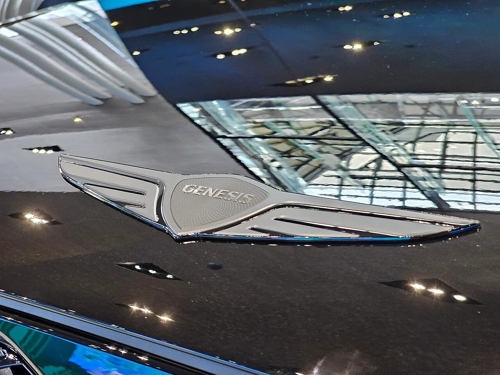

▲ 도장 2주, 전용 검사 3주가 추가되는 제네시스 GV60 마그마. 유광 컬러 기준으로도 출고까지 2개월 이상 걸린다
1. "기본은 1개월"... 그런데 마그마는 왜 두 달이 넘을까
제네시스가 9월을 "연내 신차 인도의 골든타임"으로 내세우며 빠른 출고를 강조하고 나섰지만, 정작 소비자가 어떤 옵션을 고르느냐에 따라 대기 기간이 크게 갈리는 것으로 확인됐다. G80·GV80 등 볼륨 모델의 가솔린 기본 사양은 계약 후 1개월(3~4주)이면 출고가 가능하다. 특히 즉시 출고가 가능한 선배정 물량도 상당해, 이를 활용하면 1주일 이내 인도도 가능하다는 것이 딜러들의 공통된 설명이다.
문제는 여기서부터다. 무광 컬러, 2륜구동, 스포츠 트림, 그리고 브랜드 최초의 고성능 서브 브랜드 '마그마' 트림 등 조금이라도 특화된 옵션을 얹는 순간 전용 도장 라인과 별도 품질 검수 공정이 추가로 투입되며 출고일이 뒤로 밀리기 시작한다.
▲ 제네시스 브랜드 최초의 고성능 트림 GV60 마그마. 마그마 오렌지 색상은 전용 도장 공정을 거친다 ⓒ Wikimedia Commons

▲ GV60 마그마 실내. 스티어링 휠의 전용 부스트(BOOST) 버튼과 마그마 전용 주행모드 그래픽이 적용됐다 ⓒ 제네시스
2. 차종·옵션별 대기 기간, 이만큼 차이 난다
실제로 차종과 트림별 출고 대기 기간을 비교해보면 격차가 뚜렷하다. 선배정 물량은 G80 약 3,000대, GV80 약 1,300대, GV70 약 1,600대 수준으로 파악됐다.
| 차종/트림 | 대기 기간 | 비고 |
|---|---|---|
| G80·GV80(GV80쿠페 포함) 기본 가솔린 | 1개월(3~4주) | 선배정 물량 활용 시 1주 이내도 가능 |
| GV70 가솔린·EV 기본 사양 | 1개월 | 선배정 물량 약 1,600대 |
| GV70 무광 컬러·2WD·스포츠 트림 | 기본+2주 이상 | 전용 도장 라인, 파츠 장착 공정 추가 |
| GV60 마그마(유광 컬러) | 2개월 이상 | 도장 2주+전용 성능검사 3주 추가 |
| G90 블랙 에디션 | 기본 대비 지연 | 다크 틴트 크롬 등 전용 부품 수급·검수 추가 |
▲ 무광(매트) 컬러를 고른 제네시스 GV70. 무광 도장은 전용 건조 공정이 필요해 기본 사양보다 최소 2주가 더 걸린다 ⓒ Wikimedia Commons
3. 왜 옵션 하나에 몇 주씩 늘어나나
지연의 핵심은 도장과 검수 공정에 있다. 무광 컬러는 유광 도장과는 전혀 다른 도료와 건조 조건을 필요로 해, 전용 도장 부스와 별도의 건조 시간이 추가로 소요된다. GV60 마그마처럼 고성능 서브 브랜드 모델은 여기에 더해 일반 모델에는 없는 전용 성능 검사 단계까지 거쳐야 한다. 업계 관계자는 "개인 맞춤형 특화 사양이 추가될수록 공정이 세분화되어 대기 기간이 늘어난다"고 설명했다.
G90 블랙 에디션 역시 다크 틴트 크롬 외장, 전용 휠과 내장재가 적용되면서 전용 부품 수급과 품질 검수 단계에서 생산 공정이 추가돼 기본 모델 대비 크게 지연되는 것으로 나타났다.

▲ 다크 틴트 크롬과 전용 내장재가 적용된 제네시스 G90 블랙 에디션. 전용 부품 수급 탓에 기본 모델보다 출고가 늦어진다 ⓒ Wikimedia Commons

▲ 오렌지 스티치와 전용 버킷시트가 적용된 GV60 마그마 실내. 특화 사양이 늘어날수록 전용 검수 공정도 함께 늘어난다 ⓒ 제네시스
📍 '선배정 물량'이란
선배정 물량은 제조사가 특정 사양을 미리 예측해 생산해 둔 뒤, 계약 시점에 재고를 바로 배정하는 방식을 말한다. G80·GV80·GV70처럼 대중적인 기본 사양은 선배정 물량이 두텁게 마련돼 있어 1주일 이내 출고도 가능하지만, 마그마나 블랙 에디션처럼 소비자 취향이 갈리는 특화 사양은 통상 주문 후 생산(BTO) 방식으로 진행되기 때문에 대기 기간이 길어질 수밖에 없다.
4. 9월은 "연내 인도와 이월을 가르는 골든타임"
제네시스 안팎에서는 9월을 연내 신차 인도가 가능한 사실상 마지막 기회로 보고 있다. 지금 계약해도 옵션 조합에 따라 최소 1개월에서 최대 2개월 이상이 걸리는 만큼, 특화 사양을 원하는 소비자가 9월을 넘겨 계약하면 연내 인도가 사실상 불가능해지고 해를 넘겨 이월될 가능성이 커진다는 것이다. 실제로 GV80은 9월 중순 2027년형 출시를 앞두고 있어 생산 라인 재편에 따른 추가 변수도 있다.
5. 옵션 조합, 계약 전 반드시 계산해야 한다
결국 소비자 입장에서는 "얼마나 빨리 받고 싶은가"와 "어떤 옵션을 원하는가" 사이에서 선택이 필요하다. 연내 인도가 최우선이라면 유광 컬러와 기본 트림 위주의 실속형 계약이 유리하고, 무광 컬러나 마그마·블랙 에디션 같은 특화 사양을 포기할 수 없다면 2개월 이상의 대기를 감수해야 한다. 딜러들은 "옵션 조합에 따른 세심한 납기 계산이 필수적"이라고 입을 모은다. 관련 소식은 오토트리뷴에서 확인할 수 있다. 바로가기
✅ 제네시스 계약 전, 이것만은 확인하세요
· G80·GV80·GV70 기본 사양은 1개월, 선배정 물량 활용 시 1주 이내 출고도 가능
· 무광 컬러·2WD·스포츠 트림은 기본 대비 최소 2주 추가
· GV60 마그마는 도장 2주+검사 3주로 2개월 이상 소요
· G90 블랙 에디션은 전용 부품 수급으로 별도 지연
· 연내 인도를 원한다면 9월 계약이 사실상 마지막 기회
6. 정리
제네시스의 출고 지연 현상은 아이러니하게도 "더 비싸고 특별한 옵션을 고를수록 더 오래 기다려야 한다"는 역설을 보여준다. 기본 사양은 1개월이면 충분하지만, 마그마나 무광 컬러, 블랙 에디션처럼 개인 맞춤형 요소가 들어갈수록 도장과 검수 공정이 늘어나며 대기 기간이 2개월 이상으로 불어난다. 연내 인도를 원하는 소비자라면 9월 계약 시점부터 옵션 조합별 예상 납기를 꼼꼼히 따져보는 것이 좋다.